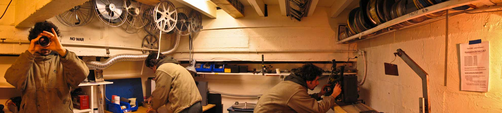

I'm 39 years old and I studied Audiovisual Communication at the Academy of Images in Aquila (IT).
I live in Paris since more 10 years. During this period, I have developed the necessary technical competences to create, to treat and to spread each type of visual product. Alternating working experiences in the movie industry to collaborations with varied structures of artistic creation, I focused my research on relationship between analogical and digital formats as well as the conception of the time in a fixed or movement image.
My skills concern cinematography photographies and film making.
In the last years, I have had my first contact with the Makers World thanks to OpenDot FabLab, where today I'm attending the Fab Academy.
Here I have found a dynamic and collaborative environment, many science-fiction machines and pertinents skills, that promise physical and tangible realisation of ideas. It's fantastic!
So on, my interests for photogrammetry, UAV applications and 3D modelling are increasing.
Today, I strongly believe that an open source revolution is in action!